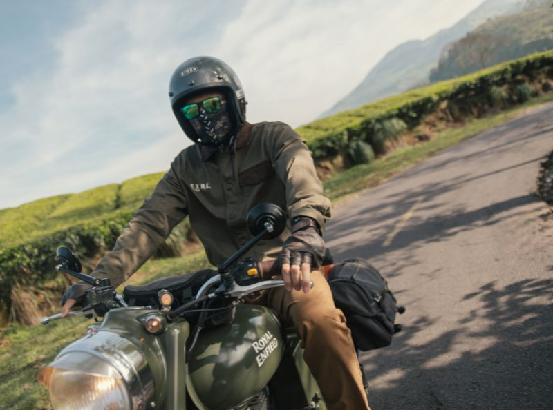

Daftar Isi
Touring menggunakan sepeda motor merupakan aktivitas yang memacu adrenalin dan memberikan kebebasan yang luar biasa. Menjelajahi keindahan alam Indonesia, dari pegunungan yang sejuk hingga pesisir pantai yang eksotis, tentu menjadi impian setiap bikers. Namun, di balik keindahan dan keseruan tersebut, tersimpan risiko yang tidak boleh diabaikan. Jalan raya adalah tempat yang penuh ketidakpastian, dan kondisi cuaca bisa berubah drastis dalam hitungan menit.
Oleh karena itu, persiapan fisik dan mental saja tidak cukup. Salah satu aspek paling krusial dalam persiapan touring adalah penggunaan Riding Gear (Perlengkapan Berkendara) yang lengkap dan memenuhi standar keselamatan. Banyak pengendara pemula yang meremehkan hal ini, menganggap jaket tipis dan helm seadanya sudah cukup. Padahal, gear yang tepat adalah investasi untuk nyawa Anda.
Dalam artikel mendalam ini, kita akan membedah satu per satu komponen gear wajib yang harus melekat di tubuh Anda saat melakukan perjalanan jauh, serta bagaimana memilih spesifikasi yang tepat sesuai dengan standar keamanan internasional. Ingat pepatah lama bikers: "Dress for the slide, not for the ride."
1. Helm: Mahkota Pelindung Kepala
Helm adalah perlengkapan yang tidak bisa ditawar. Untuk kebutuhan touring, sangat disarankan menggunakan helm tipe Full Face. Mengapa? Karena helm full face memberikan perlindungan menyeluruh, tidak hanya pada tempurung kepala, tetapi juga area dagu dan rahang yang sangat rentan benturan saat terjadi kecelakaan.
Pastikan helm Anda memiliki sertifikasi keamanan yang jelas, minimal SNI (Standar Nasional Indonesia). Untuk perlindungan lebih, carilah helm dengan standar DOT (Department of Transportation - USA), ECE (Economic Commission for Europe), atau SNELL. Fitur lain yang wajib ada adalah ventilasi udara yang baik untuk mencegah panas berlebih (heat stroke) dan visor yang jernih (idealnya dilengkapi fitur anti-kabut atau Pinlock) untuk menjaga visibilitas saat hujan atau di daerah pegunungan yang dingin.
2. Jaket Riding: Bukan Sekadar Anti Masuk Angin
Jangan samakan jaket riding dengan jaket hoodie biasa atau jaket parasut tipis. Jaket touring dirancang khusus dengan material yang tahan abrasi (gesekan), seperti Cordura, Polyester High Denier, atau Kulit (Leather). Fungsinya adalah melindungi kulit Anda dari luka parut serius jika tubuh terseret di aspal.
Jaket riding yang baik wajib dilengkapi dengan Body Protector (pelindung) pada bagian bahu, siku, dan punggung. Protektor ini biasanya terbuat dari bahan yang keras di luar namun mampu menyerap benturan di dalam. Selain itu, perhatikan fitur Air Flow System. Indonesia adalah negara tropis; jaket tanpa sirkulasi udara yang baik akan membuat Anda cepat dehidrasi dan kehilangan konsentrasi karena kegerahan. Pilihlah jaket dengan ventilasi yang bisa dibuka-tutup (mesh panel) agar fleksibel di segala cuaca.
"Jangan pernah berpikir kecelakaan tidak akan terjadi pada Anda. Gear lengkap adalah asuransi yang Anda pakai langsung di badan."
3. Sarung Tangan (Gloves) dan Sepatu (Boots)
Tangan adalah bagian tubuh pertama yang secara refleks akan menahan tubuh saat terjatuh. Tanpa sarung tangan yang memadai, risiko cedera pada telapak dan jari sangat tinggi. Gunakan sarung tangan Full Finger yang memiliki protektor pada buku-buku jari (knuckle) dan bantalan pada telapak tangan (palm slider). Bahan kulit lebih disarankan karena daya tahan geseknya yang superior dibandingkan kain biasa.
Sama pentingnya dengan tangan, kaki juga membutuhkan perlindungan ekstra. Sepatu kets atau sneakers biasa tidak dirancang untuk menahan beban motor jika terjatuh menimpa kaki. Gunakanlah Riding Boots yang menutupi mata kaki (ankle). Sepatu riding memiliki konstruksi sol yang kaku (rigid) untuk mencegah telapak kaki tertekuk secara tidak wajar, serta pelindung di area mata kaki, tumit, dan jari (toe box).

4. Celana Riding dan Protektor Lutut
Seringkali pengendara sudah memakai helm mahal dan jaket tebal, tapi hanya menggunakan celana jeans fashion biasa. Jeans standar tidak memiliki ketahanan abrasi yang cukup di aspal. Investasikan pada Celana Riding yang sudah dilengkapi protektor lutut dan pinggul.
Jika belum memiliki celana riding khusus, Anda bisa menggunakan pelindung lutut eksternal (Knee Protector) yang berkualitas. Pastikan pengikatnya kuat dan tidak mudah bergeser saat kaki bergerak. Lutut adalah engsel vital yang penyembuhannya sangat sulit jika mengalami cedera serius, jadi jangan abaikan bagian ini.
Pertanyaan Sering Diajukan (FAQ)
Apakah helm Half Face aman untuk touring?
Secara aturan lalu lintas diperbolehkan, namun untuk keamanan maksimal saat touring jarak jauh, Half Face tidak direkomendasikan karena tidak melindungi area wajah dan rahang sepenuhnya.
Berapa lama masa pakai helm?
Rata-rata masa pakai efektif helm adalah 5 tahun sejak tanggal produksi. Setelah itu, styrofoam (EPS) di dalamnya mulai mengeras dan berkurang kemampuannya menyerap benturan.
Apakah jaket kulit panas untuk iklim Indonesia?
Tergantung desainnya. Jaket kulit modern biasanya dilengkapi lubang perforasi (pori-pori buatan) untuk sirkulasi udara. Jika untuk siang hari yang terik, jaket berbahan Mesh dengan protektor lengkap bisa menjadi alternatif yang lebih sejuk.
Kesimpulan
Keselamatan adalah prioritas nomor satu. Tidak ada pemandangan indah yang sebanding dengan risiko cedera permanen. Dengan menggunakan gear lengkap mulai dari helm, jaket, sarung tangan, celana, hingga sepatu riding, Anda tidak hanya mematuhi aturan, tetapi juga menghargai diri sendiri dan keluarga yang menunggu di rumah. Persiapkan gear Anda, cek kondisi motor, dan nikmati setiap kilometer perjalanan dengan aman dan nyaman. Salam Satu Aspal!


Budi Otomotif
Safety Instructor & Editor @YamahaNewsBagikan artikel ini: